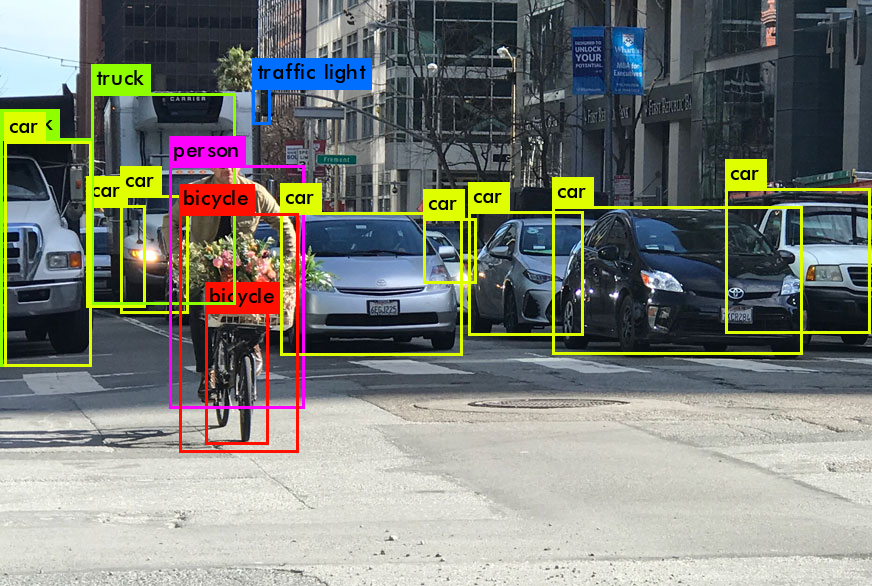
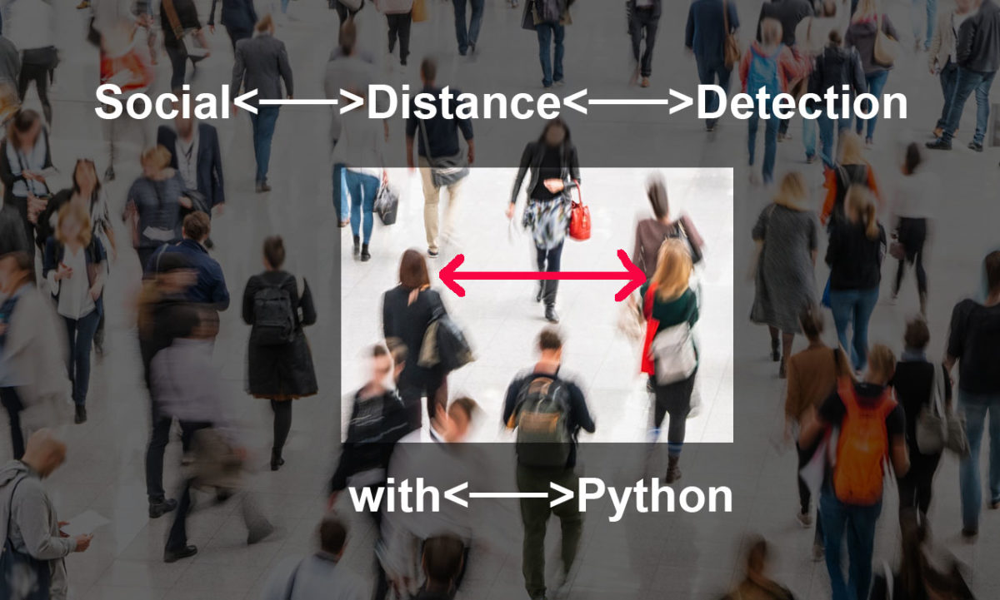

Covid 19 Spread Prevention
Event - India Academia Connect and Nvidia AI Hackathon
This Project is a part of NVIDIA and Academia AI Hackathon which was held in October, 2021.
Goal → COVID-19 Spread Prevention
Training Score → Accuracy 98%
Team → Data Piratesü襂Äç‚ò†Ô∏è
Our Team was ranked 7th in this event all over India.
Problem Description:
COVID-19 Spread Prevention using Computer Vision and Deep Learning
Social Distance Detection-
Social distancing is deliberately increasing the physical space between people to avoid spreading illness. Staying at least six feet away from other people lessens your chances of catching COVID-19. We can use OpenCV and YOLO to monitor/analyze whether people are maintaining social distancing or not.
Why OpenCV?
OpenCV is a library of programming functions mainly aimed at real-time computer vision. OpenCV (Open Source Computer Vision Library) is an open source computer vision and machine learning software library. Besides it is really light weight which was extremely important for optimizing the performance of our model.
YOLO(You Only Look Once) YOLO(You Only Look Once) is a clever convolutional neural network (CNN) for doing object detection in real-time. The algorithm applies a single neural network to the full image, and then divides the image into regions and predicts bounding boxes and probabilities for each region. These bounding boxes are weighted by the predicted probabilities.

YOLO is popular because it achieves high accuracy while also being able to run in real-time. The algorithm “only looks once” at the image in the sense that it requires only one forward propagation pass through the neural network to make predictions. After non-max suppression (which makes sure the object detection algorithm only detects each object once), it then outputs recognized objects together with the bounding boxes.
Social Distance Detection with Python:

The Detection will take place in 3 different ways -
Red - Represents many people are violating Social Distance(Threshold can be set accordingly).
Yellow - Represents 2 people are together.
Green - Represents individual people who are in Safer Zone.
The dataset will contain the following:
Train Dataset:
Model 1 - Face Mask Detection : Kaggle Face Mask Detection Dataset(https://www.kaggle.com/andrewmvd/face-mask-detection)
Model 2 - Social Distance Detection : Used MS-COCO Dataset to train the model to detect person category from other 80 Categories of COCO.
Live Dashboard and Alert Announcement:
In order to maintain Social Distancing and that everyone wears their masks, it is necessary to alert people violating the rules. This can be done by keeping track of the violations and alerting when necessary.
Thankyou for taking your time and reviewing the project.
You will find the source code for the following in my github account.
Link to the project - https://github.com/AishwaryaKshirsagar/Covid-19-Spread-Prevention